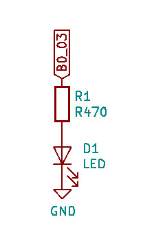
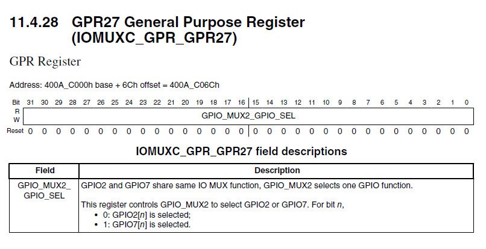
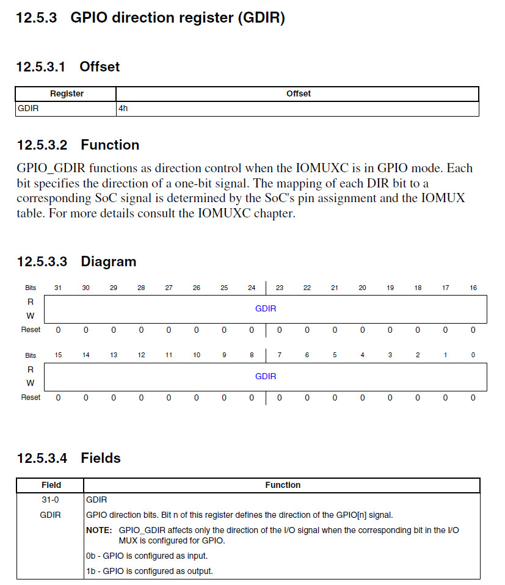
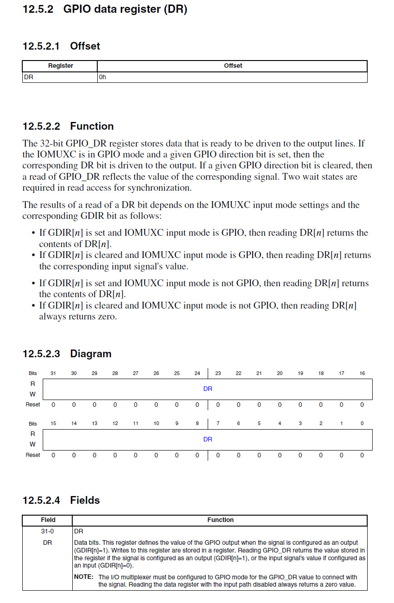
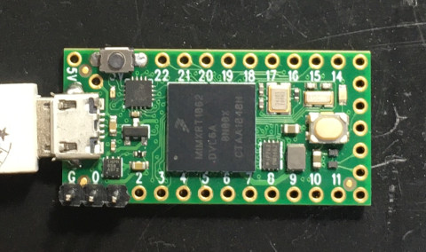
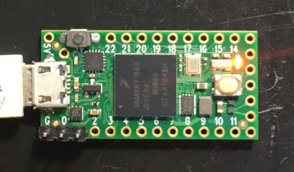

參考資訊：
https://github.com/blazer82/baremetal-blinky.teensy
https://community.nxp.com/pwmxy87654/attachments/pwmxy87654/imxrt/1417/2/MCUX%20Flashloader%20Reference%20Manual.pdf
LED連接到B0_03




.equiv IOMUXC_GPR_BASE, 0x400ac000
.equiv GPR_GPR27, 0x6c
.equiv IMXRT_GPIO7_BASE, 0x42004000
.equiv GPIO_DR, 0x00
.equiv GPIO_GDIR, 0x04
.thumb
.cpu cortex-m7
.syntax unified
.global _start
.text
_flashconfig:
.word 0x42464346
.word 0x56010000
.word 0
.word 0x20101
.word 0, 0, 0, 0, 0, 0, 0, 0, 0, 0, 0, 0, 0
.word 0x30401
.word 0, 0
.word 0x200000
.word 0, 0, 0, 0, 0, 0, 0, 0, 0, 0, 0
.word 0xa1804eb
.word 0x26043206
.word 0, 0
.word 0x24040405
.word 0, 0, 0, 0, 0, 0, 0
.word 0x406
.word 0, 0, 0, 0, 0, 0, 0
.word 0x8180420
.word 0, 0, 0, 0, 0, 0, 0, 0, 0, 0, 0
.word 0x81804d8
.word 0, 0, 0
.word 0x8180402
.word 0x2004
.word 0, 0, 0, 0, 0, 0
.word 0x460
.word 0, 0, 0, 0, 0, 0, 0, 0, 0, 0, 0, 0, 0, 0, 0, 0, 0, 0, 0, 0, 0, 0, 0, 0, 0, 0, 0, 0, 0, 0, 0, 0, 0, 0, 0
.word 0x100
.word 0x1000
.word 1
.word 0
.word 0x10000
.word 0, 0, 0, 0, 0, 0, 0, 0, 0, 0, 0
.org 0x1000
.text
_ivt:
.word 0x402000d1
.word _start
.word 0
.word 0
.word _bootdata
.word _ivt
.word 0
.word 0
.text
_bootdata:
.word 0x60000000
.word flashimagelen
.word 0
.text
_start:
.word 0x20010000
.word reset
.section .text
.thumb_func
reset:
ldr r0, =IOMUXC_GPR_BASE
ldr r1, =0xffffffff
str r1, [r0, #GPR_GPR27]
ldr r0, =IMXRT_GPIO7_BASE
ldr r1, [r0, #GPIO_GDIR]
orr r1, #(1 << 3)
str r1, [r0, #GPIO_GDIR]
0:
eor r1, #(1 << 3)
str r1, [r0, #GPIO_DR]
ldr r2, =0x5000000
1:
subs r2, #1
bne 1b
b 0b
.end
P.S. 由於程式是從QSPI Flash載入，因此需要flahsconfig資訊(MCUX_Flashloader_Reference_Manual)
main.ld
MEMORY {
ITCM (rwx): ORIGIN = 0x00000000, LENGTH = 512K
DTCM (rwx): ORIGIN = 0x20000000, LENGTH = 512K
RAM (rwx): ORIGIN = 0x20200000, LENGTH = 512K
FLASH (rwx): ORIGIN = 0x60000000, LENGTH = 1984K
}
SECTIONS {
.text : { *(.text*) } > FLASH
.rodata : { *(.rodata*) } > FLASH
.bss : { *(.bss*) } > FLASH
flashimagelen = SIZEOF(.text) + SIZEOF(.rodata) + SIZEOF(.bss);
}
Makefile
all: arm-none-eabi-as -mcpu=cortex-m7 main.s -o main.o arm-none-eabi-ld -T main.ld -o main.elf main.o arm-none-eabi-objcopy -O ihex main.elf main.hex flash: sudo teensy_loader_cli --mcu=imxrt1062 -w main.hex clean: rm -rf main.o main.elf main.hex
編譯、燒錄：
1. 連接開發板至PC
2. 按一下燒錄按鍵
3. 執行如下命令
$ make
arm-none-eabi-as -mcpu=cortex-m7 main.s -o main.o
arm-none-eabi-ld -T main.ld -o main.elf main.o
arm-none-eabi-objcopy -O ihex main.elf main.hex
$ make flash
sudo teensy_loader_cli --mcu=imxrt1062 -w main.hex
完成

